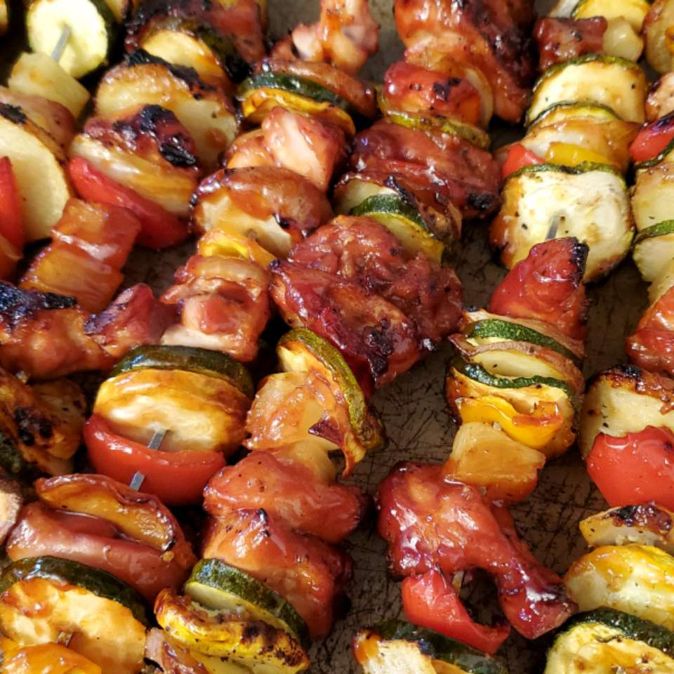

Ultra Easy Pineapple Chicken Kabobs

Description
These ultra easy pineapple chicken kabobs are for people who love chicken, pineapple, and bell pepper.
Ingredients
- 1 green bell pepper, cut into 1-inch cubes
- 1 (15 ounce) can pineapple chunks, drained
- ½ pound boneless, skinless chicken breast halves, cut into 1-inch cubes
- ½ onion, cut into 1-inch cubes
- ¼ cup barbecue sauce, or as needed
- 6 skewers
Steps
Step 1
- Preheat an outdoor grill for medium-high heat and lightly oil the grate.
Step 2
- Thread bell pepper, pineapple, chicken, and onion onto skewers; brush with barbecue sauce.
Step 3
- Thread bell pepper, pineapple, chicken, and onion onto skewers; brush with barbecue sauce.
Simple Mexican Quinoa

Description
This is my new favorite quinoa dish. It is super simple.
Ingredients
- 2 cups water
- 1 cup quinoa
- 1 (12 ounce) package frozen corn and black bean vegetable blend
Steps
Step 1
- Bring water and quinoa to a boil in a saucepan. Reduce heat to medium-low, cover, and simmer until quinoa is tender and water is absorbed, 15 to 20 minutes.
Step 2
- Place vegetable blend in a microwave-safe bowl; microwave until heated through, about 5 minutes. Stir vegetable blend into quinoa.
Easy, Meaty Sheet Pan Meal

Description
Use one pan to cook multiple foods with this formula for a family-friendly weeknight meal. Using the variations here or whatever you have on hand, simply toss everything together on one 10x15-inch baking pan. Then let your oven do the work!
Ingredients
- 1 ½ pounds boneless, skinless chicken thighs
- 1 pound tiny new potatoes, cut into 1-inch pieces
- 2 cups cherry tomatoes
- 2 teaspoons olive oil
- ¼ teaspoon salt, or more to taste
- ¼ teaspoon ground black pepper, or more to taste
- ½ cup pesto
- 1 tablespoon chopped fresh basil, or to taste
Steps
Step 1
- Preheat the oven to 425 degrees F (220 degrees C). Line a 10x15-inch baking pan with aluminum foil.
Step 2
- Arrange chicken, potatoes, and cherry tomatoes in a single layer on the prepared pan. Drizzle with oil and sprinkle with salt and pepper.
Step 3
- Roast in the preheated oven until vegetables are tender and chicken is no longer pink in the center and the juices run clear, 20 to 30 minutes. An instant-read thermometer inserted into the center should read at least 165 degrees F (74 degrees C).
Step 4
- Serve with pesto and garnish with basil.
Kezdőlap